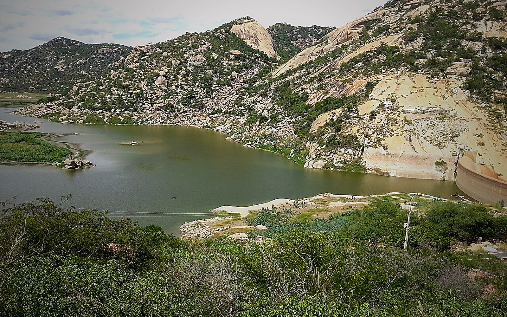
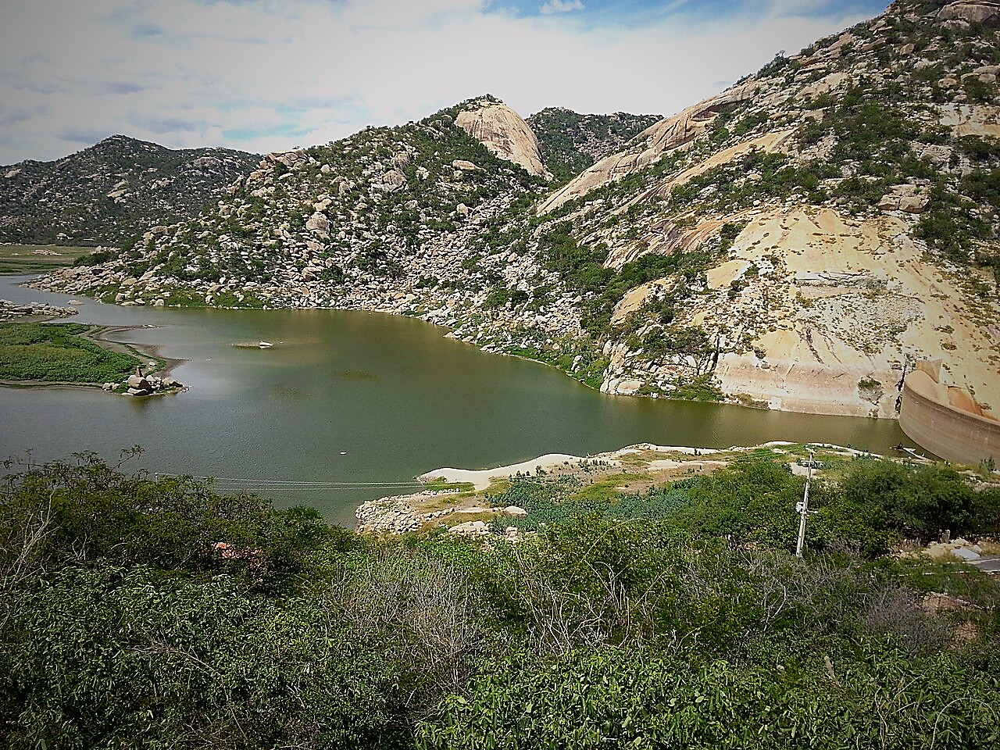

Parada 01
Açude Gargalheiras
A barragem introduz o tema da água no semiárido: armazenamento, abastecimento, paisagem e formas de vida que dependem dela.

Uma rota para observar água, paisagem, religiosidade, memória e formas de viver no Seridó.
O Açude Gargalheiras organiza a conversa sobre abastecimento, armazenamento e convivência com a seca. No centro urbano, a Basílica de Nossa Senhora da Guia e a Igreja do Rosário mostram como patrimônio religioso, memória e vida cotidiana também ajudam a explicar o território seridoense.
O aluno entende açudes e gestão hídrica como parte da vida no semiárido.
Mirantes ajudam a perceber relevo, ocupação e limites ambientais.
Igrejas, ruas e narrativas mostram identidade e cultura seridoense.
A barragem introduz o tema da água no semiárido: armazenamento, abastecimento, paisagem e formas de vida que dependem dela.

O centro histórico ajuda a discutir religiosidade, patrimônio e marcas da formação urbana de Acari.
A turma cruza relevo, espelho d’água e ocupação humana para entender como ambiente e cidade se ajustam no território seridoense.
No diário de campo, os alunos registram como açude, patrimônio religioso e paisagem ajudam a explicar a vida regional.
"A turma voltou com repertório concreto para discutir o que observou em campo na retomada em sala."
"A comunicação foi clara antes da saída e meu filho voltou explicando o que viveu e aprendeu ao longo do dia."
Em 30 minutos a Azimute entende suas turmas, ajusta o roteiro e entrega o argumento pedagógico para apresentar à coordenação e às famílias.
Falar com a Azimute